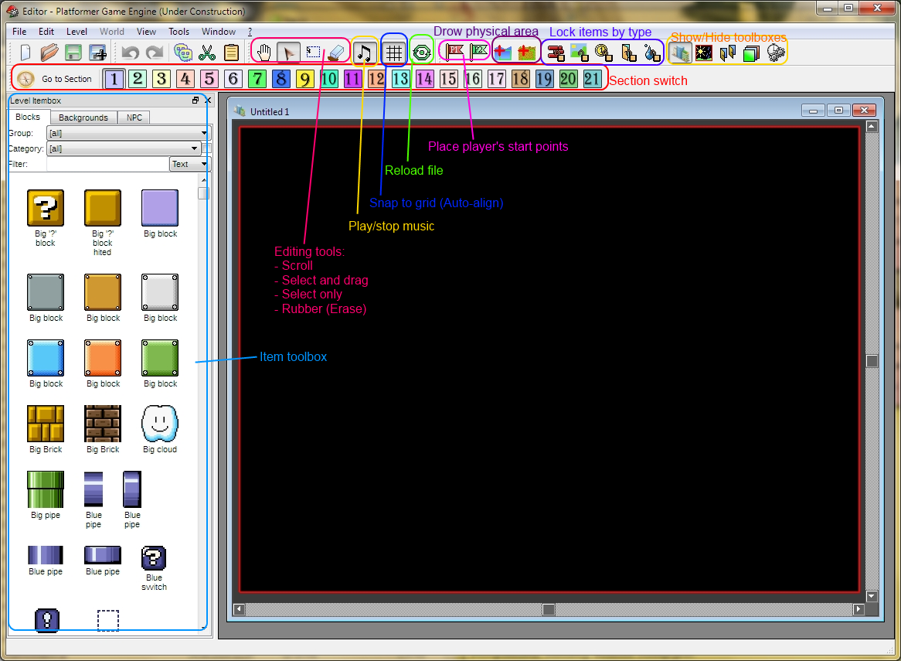

Levels - is the total space available to the player(s) during the course of completing a discrete objective.
Here you can made levels for your game.
The main level unis is a section. Section - separated sub-area of level, what have his settigs: music, background, physics, etc. Player can move between sections by special points - warps. All sections placed in a single space, and you can see many sections, but you can set settings only for current section.
Blocks - the solid objects which are tiles with his shape and size. The main construction material of which level consists. The majority of blocks interacts from players on whom it can stand about which the player can hit which can be a limiting wall. There are blocks the touch to which hurt to the game character, and some are capable to kill instantly not only it, but also to destroy other objects which have touched them. There are special blocks with own algorithm of interaction with the player. For example: switch, switching wall, what changing his state frol lock to unlock and back; switches between player characters and character limit blocks, what allows walk throught them only for one of characters, for other characters theese blocks working as normal, etc. As there is a special type of blocks which can have any size. This is a Sizable blocks.
Background objects. - is a sceneries. But some BGO can have special features: platform movement paths, will define movement paths for moting "platforms", reverser, what will revert platform's speed back. Some BGO allows to clibmb on them. BGO can be background and foreground. Foreground BGO placing over all other level items.
Non-playable characters - is a main game unit, what building the game process: theese is a enemies, friends, items, power-ups, sceneries, etc. Each NPC have his algorith, and can be programmed.
Warps - is a special units, what allow to player teleport from first warp point (Entrance) to second (Exit). Player can teleport between difference places of one section, and also player can teleport between sections. This is a one way for enter to another section, but exclusion is some NPCs, what can generate warp to other section.
Physical environment area (Water, Quicksand, etc.) - this is a specual unit, what define the physical environment inside his rectacle.
Layers - is a groups of items, what can be used for fast access to them by special events.
Events - is a special data of level, what cat dinamicly define and change the game process options. For example: section settings, hide/show objects on layers, move objects on layer, made scrolling of section, etc.
Level editing interface

Copyright © 2014 Platforger Game Engine by Wohlstand project. All rights reserved.